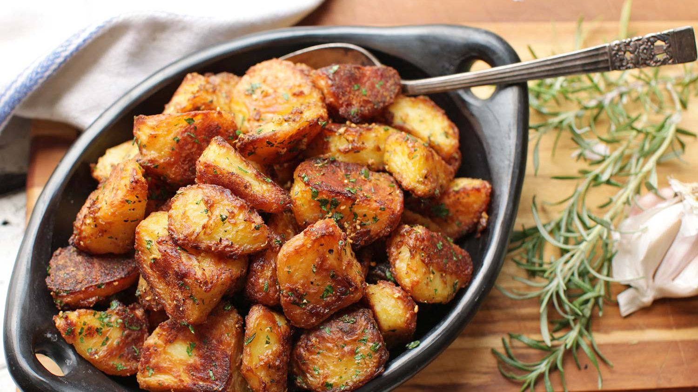

Crispy Oven Roasted Potatoes

Description
My kids absolutely love these crispy oven roasted potatoes. Since they are par boiled first the potatoes have a smooth creamy interior and a crispy crunch exterior.
Ingredients
- 2 lbs. of baby white potatoes diced into half inch pieces
- 3 Tbsp Olive oil
- 3 Cloves Minced garlic
- Handful of chopped basil
- Salt and Pepper
Steps
- Boiled diced potatoes in a large pot for about 5 minutes or until just fork tender
- Once potatoes are done boiled, drain water and return to pot. While in the pot roughly stir the potatoes to break up a few to create a coating of small pieces covering the larger potatoes
- Toss the potatoes with the Olive oil to coat and spread on a baking sheet in a single layer
- Bake at 425 degrees on the top rack for approximately 40 minutes, or until crispy brown, stirring halfway through
- Once brown, remove from oven and combine with garlic and basil
- Salt and Pepper to taste